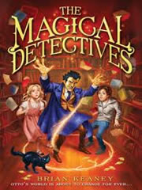
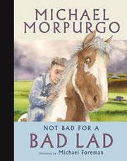
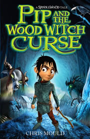
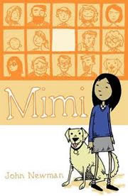
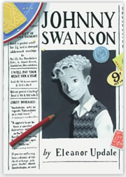

The award was first presented in 1987 and was established so that young people could draw attention to the sorts of books they rave about and would most like to recommend, books for a leisurely read to wile away lengthy bus journeys, wet dinner hours or torch lit, under-the-cover sleepless nights!

 |
 |
 |
The Magical Detectives |
Not Bad for a Bad Lad |
Pip and the Wood Witch Curse |
 |
 |
|
Mimi |
Johnny Swanson |